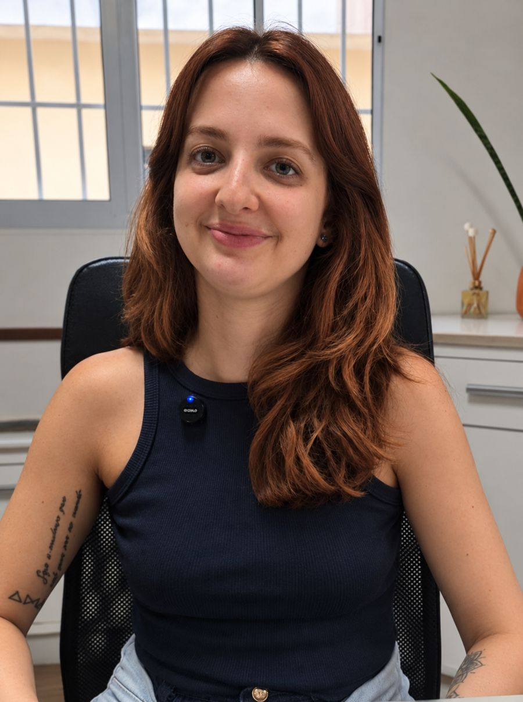
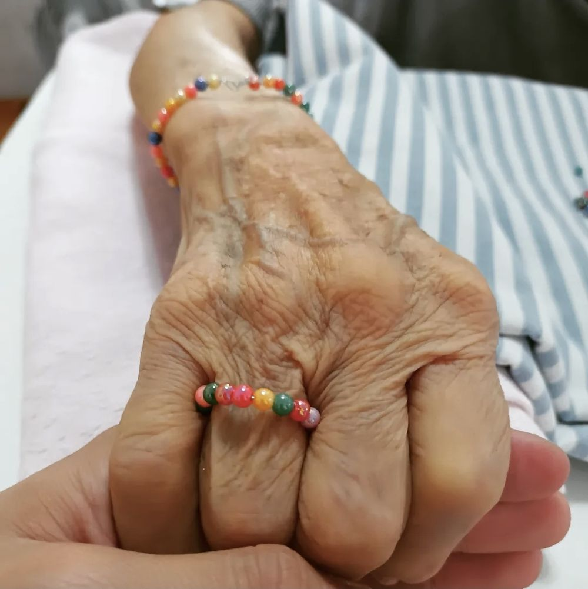

Terapia ocupacional de mão · Bairro Saúde, São Paulo
Reabilitação de mão e punho para você voltar a fazer.
Pós-operatório, fraturas, tendões, túnel do carpo e dedo em gatilho. Atendimento individual, a cinco minutos do Metrô Saúde.

O alvo do tratamento
Ninguém procura terapia de mão por causa da mão.
Procura porque parou de conseguir fazer alguma coisa. É esse gesto que a gente coloca como meta desde a primeira sessão:
- Girar a chave
- Abrir a garrafa
- Abotoar a camisa
- Segurar o copo cheio
- Digitar o dia inteiro
- Pegar seu filho no colo
Amplitude e força são o caminho. O gesto é o destino.
O que atendemos
Casos de mão, punho e dedos.
- Reabilitação pós-operatória de mão, punho e dedos
- Fraturas, lesões de tendão e de nervo periférico
- Síndrome do túnel do carpo
- Dedo em gatilho e tenossinovite de De Quervain
- Rizartrose e outras dores articulares da mão
- Controle de edema, manejo de cicatriz e dessensibilização
- Retorno às atividades de casa e ao trabalho

Quem conduz
Dra. Beatriz Ostan
Terapeuta ocupacional
Formada em Terapia Ocupacional pela USP e especialista em Terapia de Mão pelo Hospital das Clínicas da Faculdade de Medicina da USP. Conduz os atendimentos de forma individual e, quando há médico responsável pelo caso, mantém a condução alinhada ao protocolo indicado por ele.
Como funciona
Do primeiro contato ao primeiro gesto de volta.
- Você fala com a nossa equipePelo WhatsApp ou por telefone, para agendar a avaliação no horário que couber na sua semana.
- Avaliação individualRegistro objetivo de amplitude, força e função da mão — e a definição de qual gesto é a meta.
- Plano de tratamentoSessões individuais, com condução alinhada ao médico responsável quando houver.
- Reavaliações periódicasA evolução acompanhada em números, não em impressão, do início até a alta.
Dúvidas frequentes
Antes de agendar.
Preciso de pedido médico?
Não é obrigatório para começar. Mas é comum, e recomendado, ter avaliação médica e exames, com o médico e a terapeuta ocupacional acompanhando o caso em conjunto.
Quantas sessões vou precisar?
Depende de cada caso, e isso fica claro já na avaliação. Nossa proposta é a máxima eficiência terapêutica: buscar a sua reabilitação e a alta o mais rápido possível, sem esticar o tratamento.
Vocês atendem convênio?
O atendimento é particular. Emitimos nota fiscal e relatório terapêutico para você pedir reembolso ao seu plano de saúde.
Onde ficamos
A cinco minutos do Metrô Saúde.
Rua Dr. Samuel Porto, 396
Bairro Saúde, São Paulo — SP
Sessões particulares, com nota fiscal e relatório para reembolso. Ambiente acolhedor, humanizado e preparado para receber você.
Ver no mapaQuanto antes começa, menos tempo leva.
Mão parada perde amplitude rápido. Fale com a nossa equipe e agende a sua avaliação.